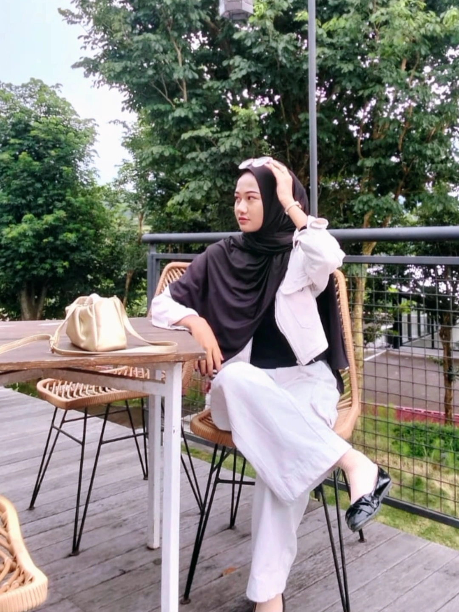

Kunjungi website ↗
Kunjungi website ↗RPL STUDENT & WEB DEVELOPER
HAI
saya Anjani
Selamat datang di portofolio saya. Portofolio ini berisi pengalaman dan hasil belajar saya selama Praktik Kerja Lapangan (PKL).

✦
AVAILABLE
FOR FREELANCE
FOR FREELANCE
BELAJAR DENGAN SEMANGAT ✦ BERKARYA DENGAN HATI ✦ TERUS BERKEMBANG ✦ WUJUDKAN MASA DEPAN ✦
01 / ABOUT ME
TENTANG
SAYA.
Saya Anjani Kurnia Lestiawan, siswi jurusan Rekayasa Perangkat Lunak (RPL) yang memiliki ketertarikan pada bidang pengembangan web dan teknologi. Saya senang mempelajari hal-hal baru, mengembangkan keterampilan, serta mencari solusi melalui proses belajar dan praktik secara langsung. Selama menjalani Praktik Kerja Lapangan (PKL),saya memperoleh pengalaman dalam mengerjakan berbagai tugas dan proyek yang membantu meningkatkan kemampuan teknis, kerja sama tim, serta tanggung jawab dalam menyelesaikan pekerjaan. Portofolio ini merupakan dokumentasi dari pengalaman, pembelajaran, dan hasil karya yang telah saya capai selama proses tersebut.
Lebih banyak tentang saya ↗Rasa Ingin Tahu TinggiMudah BeradaptasiBertanggung JawabBerani Mencoba Hal Baru

CREATIVE MIND • KIND HEART •
MOTO SAYA
Diam dalam proses, tekun dalam usaha, sabar menghadapi setiap rintangan, dan biarkan hasil terbaik menjadi bukti perjuangan yang telah dilakukan.
SETIAP PROSES MEMILIKI MAKNA.4+Bulan
PKL
PKL
2Project
Yang Dibuat
Yang Dibuat
Setiap HariSemangat Belajar
02 / MY PROJECTS
Cari Tahu Tentang Saya? Kenalan dongkkk↗Project

03 / MOTIVATION
Terus belajar, Terus berkembang
"Saya percaya bahwa setiap pengalaman adalah kesempatan untuk berkembang. Dengan semangat belajar, rasa ingin tahu, dan kemauan untuk terus mencoba, saya berusaha memberikan hasil terbaik dalam setiap proses yang saya jalani.”
04 / MY PROCESS
Dari proses
menjadi pengalaman.
Setiap proyek dimulai dari kemauan untuk belajar, kemudian dikembangkan melalui proses, hingga menghasilkan karya yang bermanfaat.
BELAJAR
Memahami materi, mencari referensi, dan mempelajari teknologi yang akan digunakan sebelum mulai mengerjakan projek.
MENGEMBANGKAN
Menerapkan ilmu yang telah dipelajari ke dalam website dengan memperhatikan tampilan, fungsi, dan kenyamanan pengguna.
MENYEMPURNAKAN
Melakukan revisi, memperbaiki kekurangan, dan menguji hasil agar website lebih rapi, responsif, dan siap digunakan.
TOOLS & TECHNOLOGIES
Yang saya gunakan untuk belajar dan berkarya
Canva

CapCut

Figma

Microsoft Word

Microsoft Excel

Qoder

VS Code

HTML

CSS

JavaScript
05 / CONNECT WITH ME
Tertarik dengan Profil Saya?
Mari Berkenalan.
Hubungi dibawah ini yaaw
Jawa Tengah, Indonesia
Siswi RPL Sedang Menjalankan PKL
© 2026 ANJANI KURNIA LESTIAWAN